迷宫存档
（隐藏博文）
这些是我小学到高中画的部分迷宫
在这里的迷宫都是拥有者巨大工程量的一个整体
| 序号 | 第一页 | 第二页或注释 |
|---|---|---|
| 1 |  | 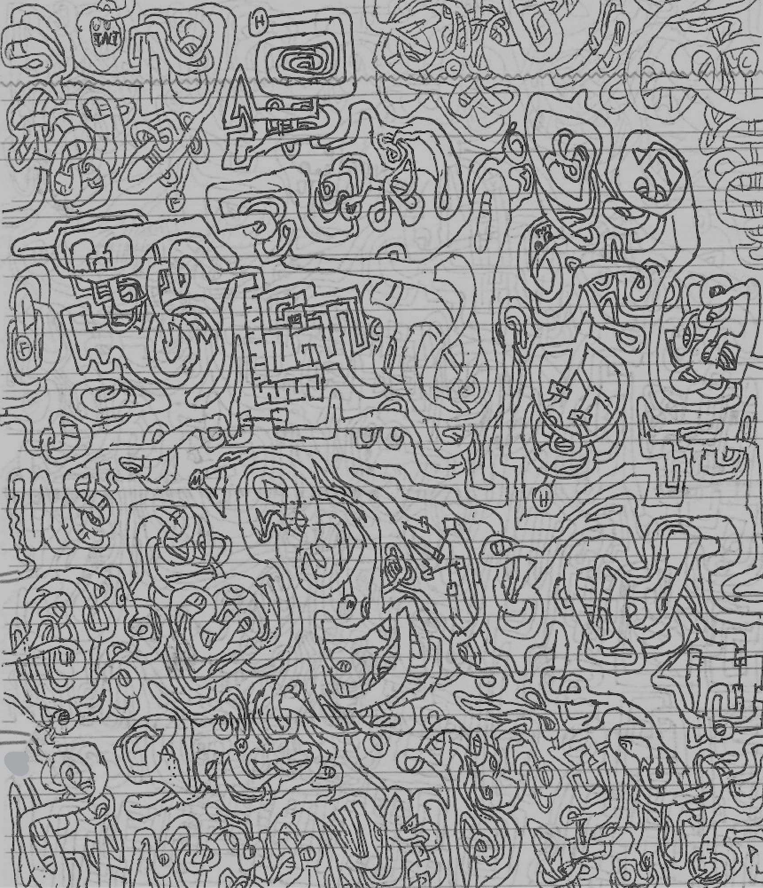 |
| 2 | 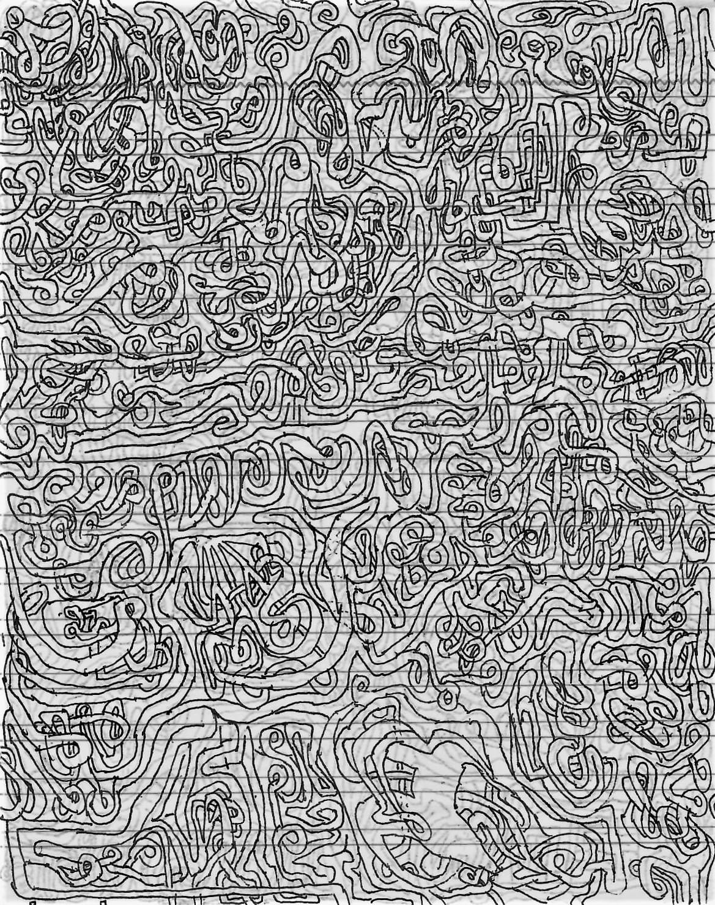 | 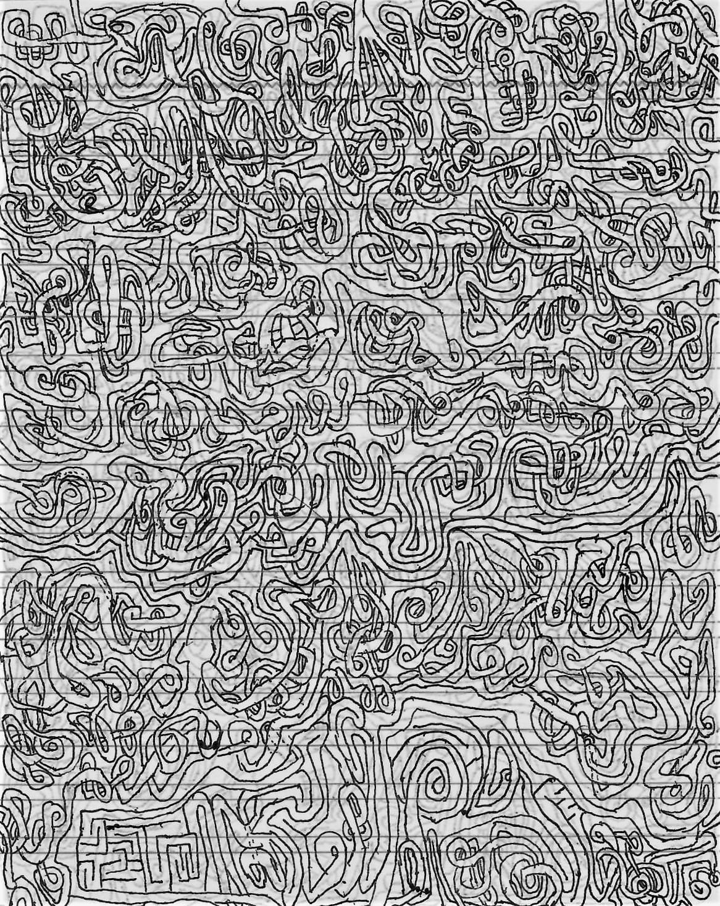 |
| 3 | 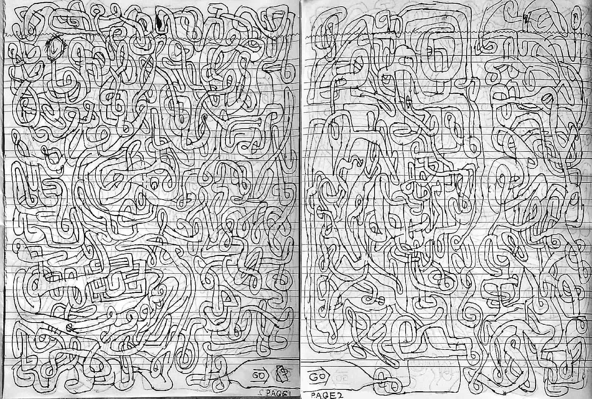 | 两页经过后期拼接 |
| 4 | 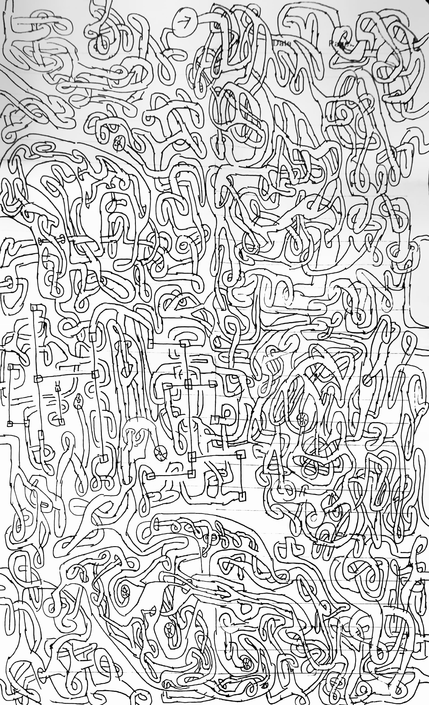 | 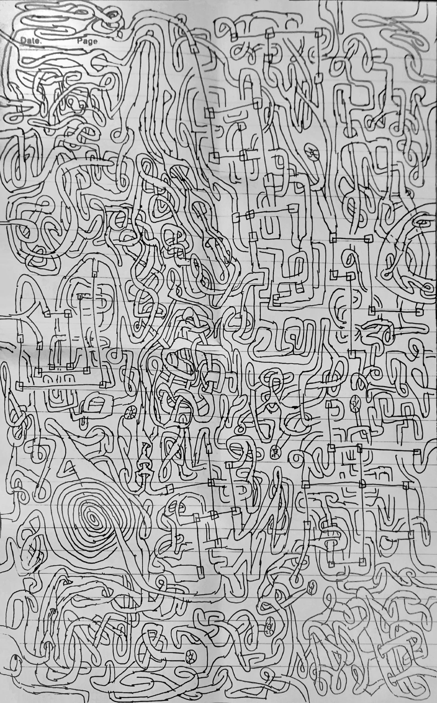 |
| 6 | 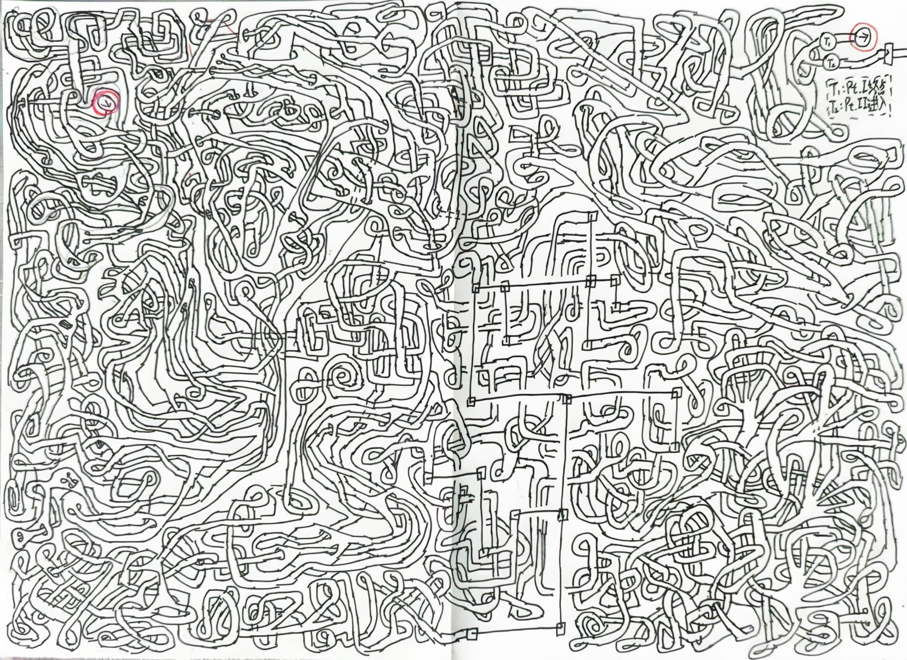 | 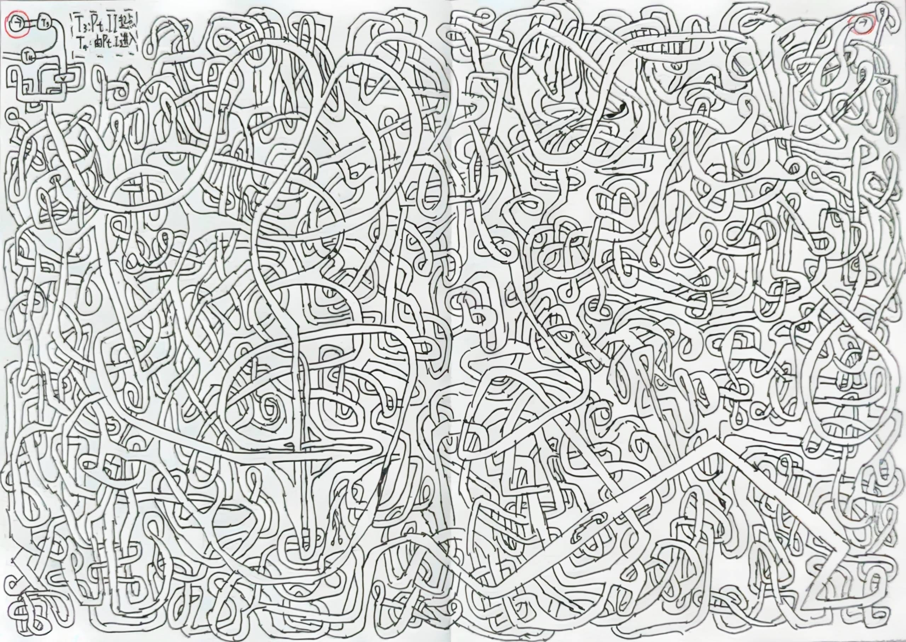 |
| 7 | 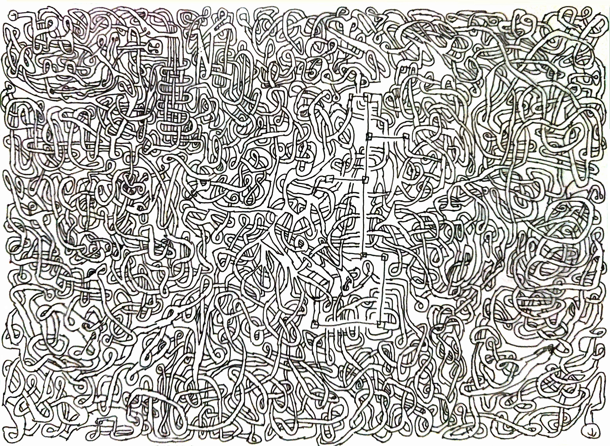 | 一张很大的草稿纸 |
特殊的：
| 序号 | - | - | - | - |
|---|---|---|---|---|
| 5 | 第一面-折叠 | 第一面-展开 | 第二面-折叠 | 第二面-展开 |
| 5 | 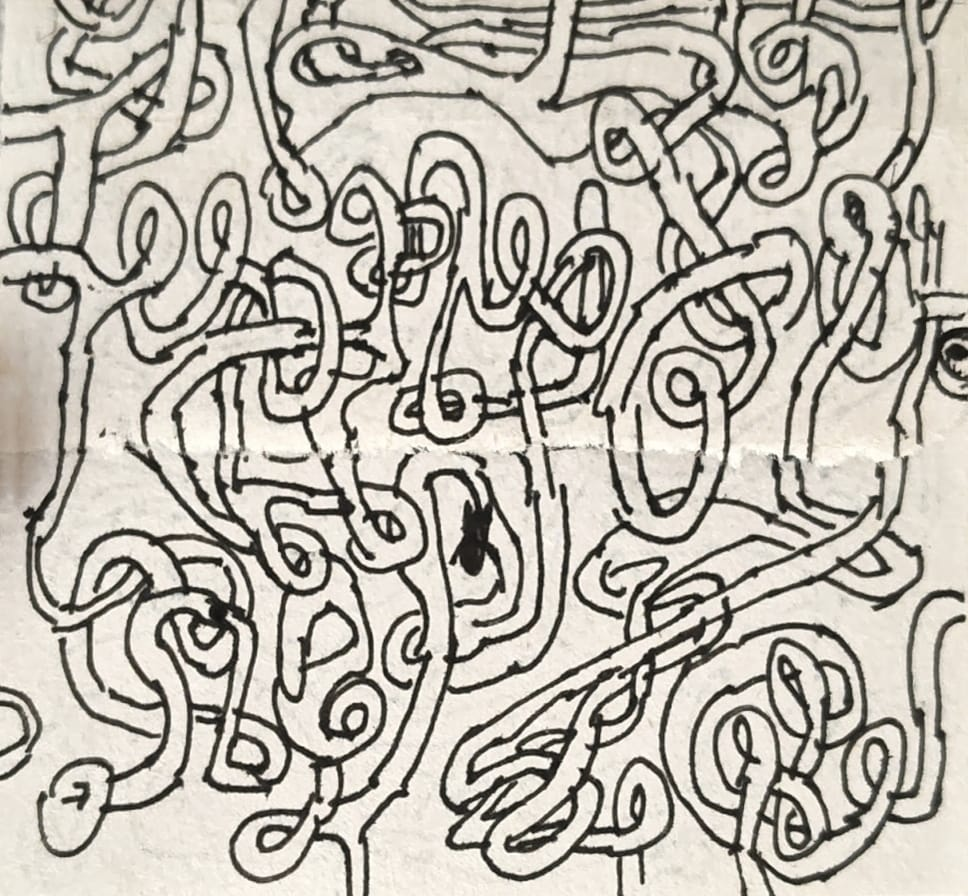 | 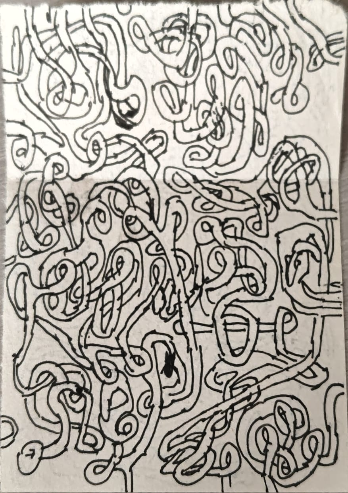 |  | 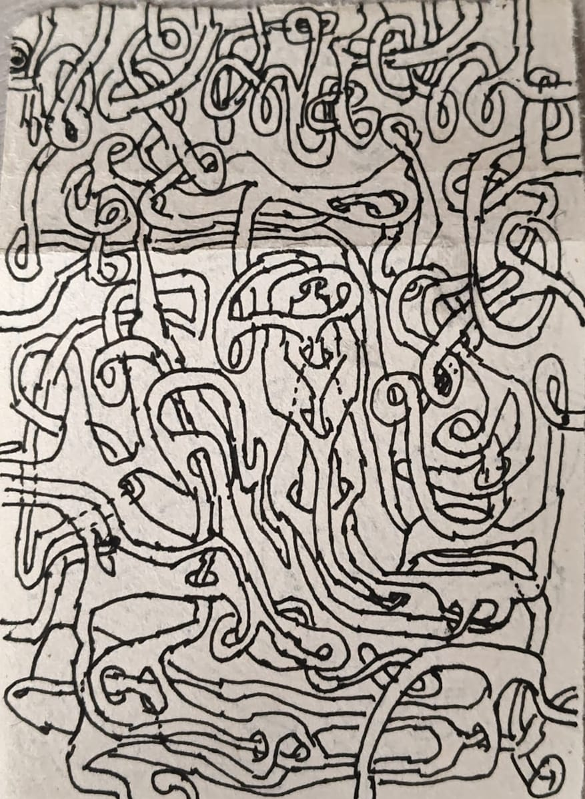 |
注：
- 可以通过边缘来到另一面，不过注意是纸张边缘，也就是说左边缘和另一张的右边缘高度一致的为同一路径，上边缘和另一张的上边缘横向镜像的位置为同一路径，建议双面打印游玩
- 5比较小巧，但是只需哦难度极大，需要借助开关纸张找到路径